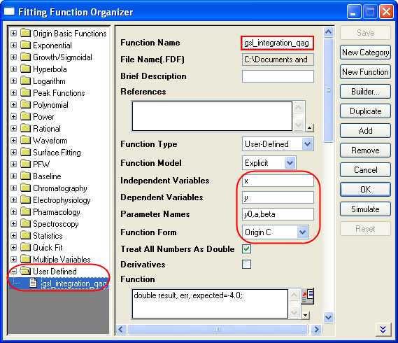

Dieser Artikel stellt dar, wie die GSL-Funktion als Anpassungsfunktion
verwendet wird.
Origin-Version mind. erforderlich: 8.0 SR6
1. Wir passen die Beispieldaten nach dem folgenden Modell an:
0,1 bis 0,10517 0,2 bis 0,2214 0,3 bis 0,34986 0,4 bis 0,49182 0,5 bis 0,64872 0,6 bis 0,82212 0,7 bis 1,01375 0,8 bis 1,22554 0,9 bis 1,4596 1 bis 1,71828 1,1 bis 2,00417 1,2 bis 2,32012 1,3 bis 2,6693 1,4 bis 3,0552 1,5 bis 3,48169 1,6 bis 3,95303 1,7 bis 4,47395 1,8 bis 5,04965 1,9 bis 5,68589 2 bis 6,38906 2,1 bis 7,16617 2,2 bis 8,02501 2,3 bis 8,97418 2,4 bis 10,02318 2,5 bis 11,18249 2,6 bis 12,46374 2,7 bis 13,87973 2,8 bis 15,44465 2,9 bis 17,17415 3 bis 19,08554 3,1 bis 21,19795 3,2 bis 23,53253
2. Fügen Sie die Datei ocgsl.h in (Anwenderdateiordner) ein und
stellen Sie sicher, dass die gsl-DLLs vor dem nächsten Schritt in denselben
Speicherort kopiert werden. Siehe Aufrufen der GNU Scientific Library.
ocgsl.h
#pragma dll(libgsl, header) // this is OC special pragma, // header keyword is to indicate libgsl.dll is in same location as this file #define GSL_EXPORT // for OC, this is not needed, so make it empty // you can directly search and copy gsl function prototypes here typedef double (* FUNC)(double x, void * params); struct gsl_function_struct { FUNC function; void * params; }; typedef struct gsl_function_struct gsl_function; typedef struct {size_t limit; size_t size; size_t nrmax; size_t i; size_t maximum_level; double *alist; double *blist; double *rlist; double *elist; size_t *order; size_t *level; } gsl_integration_workspace; GSL_EXPORT gsl_integration_workspace *gsl_integration_workspace_alloc (;const size_t n); GSL_EXPORT void gsl_integration_workspace_free (gsl_integration_workspace * w); GSL_EXPORT int gsl_integration_qag (const gsl_function * f, double a, double b, double epsabs, double epsrel, size_t limit, int key, gsl_integration_workspace * workspace, double *result, double *abserr);
3. Drücken Sie F9, um den Dialog Fitfunktionen verwalten zu öffnen
und dann eine neue Funktion hinzuzufügen:

4. Drücken Sie auf die Schaltfläche auf der rechten Seite des Felds Funktion, um den Code Builder zu öffnen und die folgenden Codes zu kompilieren: _nlfgsl_integration_qag.fit
#include "..\ocgsl.h" static double f_callback(double x, void * params) { double alpha = *(double *)params; return exp(alpha*x); } void _nlsfgsl_integration_qag( // Fit Parameter(s): double y0, double a, double beta, // Independent Variable(s): double x, // Dependent Variable(s): double& y) { // Beginning of editable part double result, err, expected = -4,0; // Allocates a workspace suffcient to hold 1000 double precision intervals, // their integration results and error estimates gsl_integration_workspace *ww = gsl_integration_workspace_alloc(1000); gsl_function F; F.function = f_callback; F.params = β // integral interval (0, x), within the desired absolute // error 0 and relative error 1e-7 gsl_integration_qag(&F, 0, x, 0, 1e-7, 1000, 0, ww, &result, &err); // frees the memory associated with the workspace w gsl_integration_workspace_free (ww); y = y0 + a*result; // End of editable part }
Außerdem gibt es die folgende ausführlichere, aber ebenfalls effiziente
Version der Anpassungsfunktion:
//---------------------------------------------------------- // #include <ONLSF.h> #include "..\ocgsl.h"static double f_callback(double x, void * params) { double alpha = *(double *)params; return exp(alpha*x); } void _nlsfgsl_integration_qag( // Fit Parameter(s): double y0, double a, double beta, // Independent Variable(s): double x, // Dependent Variable(s): double& y) { // Beginning of editable part NLFitContext *pCtxt = Project.GetNLFitContext(); if ( pCtxt ) { static vector vInteg; NLSFCURRINFO stCurrInfo; pCtxt->GetFitCurrInfo(;&stCurrInfo); int nCurrentIndex = stCurrInfo.nCurrDataIndex; BOOL bIsNewParamValues = pCtxt->IsNewParamValues(); if ( bIsNewParamValues ) { vector vx; pCtxt->GetIndepData(&vx); int nSize = vx.GetSize(); vInteg.SetSize(nSize); // Allocates a workspace suffcient to hold 1000 double precision intervals, // their integration results and error estimates gsl_integration_workspace *ww = gsl_integration_workspace_alloc(1000); gsl_function F; F.function = f_callback; F.params = β double result, err, expected = -4,0; for(int ii=0; ii<nSize; ++ii) { // integral interval (0, vx[ii]), within the desired absolute // error 0 and relative error 1e-7 gsl_integration_qag(&F, 0, vx[ii], 0, 1e-7, 1000, 0, ww, &result, &err); vInteg[ii] = result; } // frees the memory associated with the workspace w gsl_integration_workspace_free (ww); } y = y0 + a*vInteg[nCurrentIndex]; x; } // End of editable part }
5. Fügen Sie die folgenden Initialisierungscodes hinzu:
Parameter Init
//Code to be executed to initialize parameters sort( x_y_curve ); double coeff[2]; fitpoly( x_y_curve, 1, coeff);a = coeff[0]; y0 = coeff[1]; beta=1,0
6. Anpassung mit Hilfe der benutzerdefinierten Funktion gsl_integration_qag, hier sind die Ergebnisse:
y0 = -1,06363E-6
a = 1
beta=1